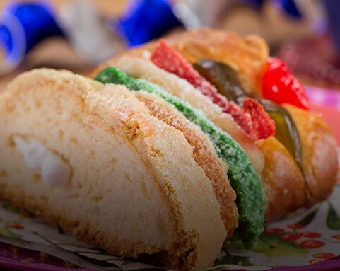
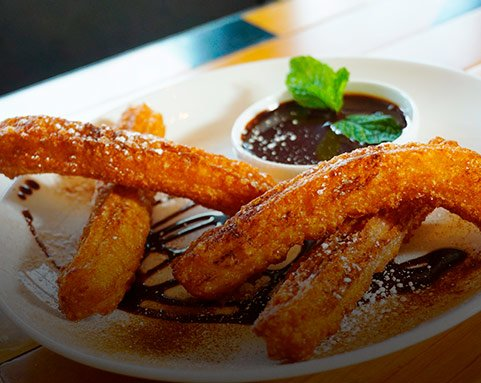

Historia
Productos
Ritual
Recetas
Cocoa Plan
®
Recetas
Consiente a tu familia y crea momentos únicos e inolvidables utilizando tus dos ingredientes secretos:
amor y chocolate Abuelita.
Cómo preparar chocolate Abuelita®;
Ver receta

Cómo hacer Rosca de Reyes con Chocolate Abuelita®
Ver receta
Cómo hacer Pan de Muerto con Chocolate Abuelita
Ver receta

Cómo hacer Churros con Salsa de Chocolate Abuelita®
Ver receta
Inicio
Historia
Productos
Ritual
Recetas
Cocoa Plan®